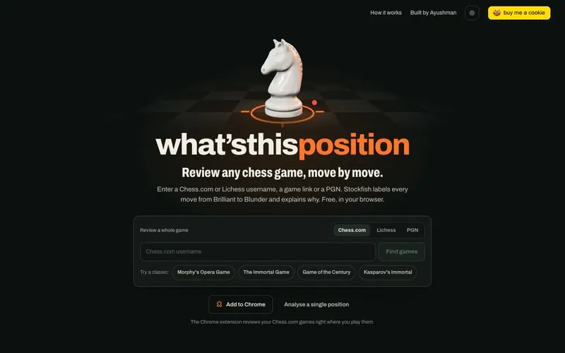
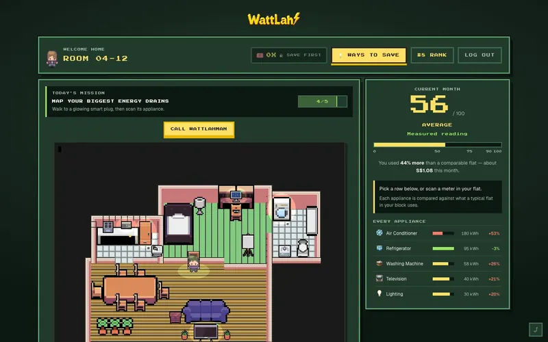
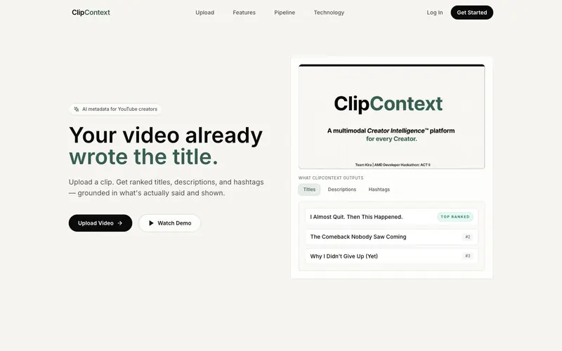

AI / ML
Multimodal pipelines, LLM generation with AI-based ranking, and self-hosted inference on AMD GPUs.
I'm a first-year Business AI Systems student at NUS, building towards a career in AI/ML engineering.
I like the part of AI where models stop being demos and start being systems — pipelines that take in messy real-world input, reason over it, and ship something useful at the other end. Right now that means building the finance tool for the NUS Entrepreneurship Society as its Technical Executive. Before that, I led ClipContext, a multimodal video-understanding platform, and ranked World #8 of 20,000 developers at the lablab.ai AMD ACT II Hackathon.
Before NUS, I was Head Boy of Delhi Public School Gurgaon, representing 5,000+ students, led the school's competitive programming team, and ran the tech and finances for Chakr — a social-impact project that put 260+ refurbished bicycles in the hands of students who needed them.
Multimodal pipelines, LLM generation with AI-based ranking, and self-hosted inference on AMD GPUs.
Python for models and backends, TypeScript for products, C++ from competitive programming.
Interfaces in React and Next.js on top of FastAPI services, wired into third-party APIs.
Shipping to production and keeping the data somewhere sensible once it gets there.
Raised SGD 3,300+ in crowdfunding and used data to steer procurement and distribution decisions.
Coordinated 120 council members and led technical teams from idea to working product.
Live products, AI systems and social impact. Scroll sideways, and open any card for the full story.
→
01 LiveChess AI · Solo build · 2026
Free, open-source chess game review. Stockfish 19 runs in your browser, labels every move from Brilliant to Blunder, and explains why in words a club player can follow.
Open source · Chrome extension

02Gamified home energy audits · LifeHack 2026
Turns your apartment into a pixel-art game: walk around, scan appliance meters, build a savings plan and see where it ranks in your building's league.
LifeHack 2026 · Ecovolt track

03Multimodal AI · Team Lead & Lead Dev · 2026
Understands a video through transcription, visual analysis and temporal alignment, then generates 10 trend-aware titles, descriptions and hashtag sets, ranked by an AI discriminator.
Technical Executive · NUS Entrepreneurship Society
The finance governance system for NES: procurement requests routed through tiered approval workflows, with an append-only audit trail of who approved what and when.
Now building
Wheels of Hope · Head of Finance & Tech Ops
A social-impact initiative redistributing refurbished bicycles to underprivileged students. I built and ran the web app behind its operations and led the tech team.
tGELF Youth Leader 2024–25 winner
In the garage
Building...
Chess AI · Solo build · 2026
Chess games and positions, explained so anyone gets why. Stockfish 19 runs entirely in your browser, labels every move from Brilliant to Blunder, then explains the reasoning step by step. Every reason is built from the board and targeted engine searches, never invented.
Everything heavy runs in the visitor's browser. Stockfish 19, compiled to WebAssembly, reviews a game on a small pool of workers, then re-searches the tactical moments deeper. Labels come from expected-score loss; explanations come from rules over verified board facts plus targeted probes: a null-move search for threats, and searchmoves to test each way of taking a sacrifice. A small CNN reads screenshots on the device. The server only serves files and proxies Chess.com and Lichess.
Free software under GPL-3.0. Screens captured from the live site.
Gamified energy audits · LifeHack 2026 · Team build
Everyone agrees they should use less electricity; almost nobody changes what they do. WattLah turns your apartment into a short, game-like energy audit: walk around the pixel home, scan appliance meters, find the biggest loads, preview concrete savings and see how you rank in your building's league.
Phaser 3 renders the room, movement and appliance interaction; React owns the resident journey, the dashboard and the league. A typed, SSR-safe event bridge connects the two. Audit progress lives in room-scoped localStorage, so no password or private account data is ever stored. Keyboard and touch movement, accessible scan dialogs and reduced motion are all supported.
Screens captured from the repo running locally. Pixel art by LimeZu (Modern Interiors).
Multimodal AI · Team Lead & Lead Developer · Jul – Aug 2026
Creators spend real time writing titles, descriptions and hashtags that end up disconnected from what the video shows. ClipContext takes a short clip and returns the top candidates for each, picked by an AI discriminator and grounded in the video's own speech and visuals. Built for the lablab.ai AMD Developer Hackathon (ACT II), with AI stages running on a real AMD GPU via ROCm and vLLM.
A FastAPI backend runs a sparse pipeline: local transcription, OpenCV and FFmpeg frame work, one multimodal understanding call, then generation and ranking. Each AI stage can route to an AMD ROCm/vLLM server instead of Fireworks AI, with automatic fallback and a per-stage audit trail. Next.js on the front, Firebase for optional accounts.
Screens captured from the live site.
Procurement request · audit trail
SUBMITTEDrequest raised by a member
TIERapproval tier set by the amount
APPROVEDcommittee sign-off
APPROVEDstaff advisor sign-off
REFsequential reference issued
Finance governance · NUS Entrepreneurship Society
The finance governance system for the NUS Entrepreneurship Society, which I'm building as its Technical Executive. Procurement requests are routed through tiered approval workflows, and every decision lands in an append-only audit trail of who approved what, and when. Net assets under management will soon exceed SGD 30,000.
The business rules (tier classification, approval completion, segregation of duties, status transitions) are pure functions with no database access, so they're unit-tested in isolation with Vitest. Postgres on Supabase through Drizzle ORM, with the Next.js App Router and TypeScript in strict mode.
Social impact · Mar 2025 – Feb 2026
Wheels of Hope: a social-impact initiative redistributing refurbished bicycles to underprivileged students. As Head of Financing & Technical Operations, I built and ran the web app behind its operations, led the tech team, and raised the money through crowdfunding.
In the garage
Something new is being built. Details when it's ready to leave the garage.
Building...
Peak rapid rating of 1500 on chess.com and a member of the NUS iChess Club. Same dopamine as debugging, fewer stack traces.
Challenge me · 10 min rapid ↗A long run of Model UNs, debates and extempore competitions, including heading my school's travelling debate team. Give me a mic and a topic and I'll find something worth saying.
Director of Flag on the 29th Management Committee of the NUS Students' Computing Club, rallying Computing students for NUSSU Flag Day, the university's annual street drive raising funds for Community Chest charities.
I write about anything and everything on Medium.
Read my blog ↗Diehard Chelsea fan, and McLaren all the way in F1 — hence all the papaya. When I'm not watching, I'm playing cricket, badminton, tennis or table tennis.
Looking for AI/ML internships and projects worth building. Hackathon team, research idea, or a problem that needs a model — my inbox is open.
Every contribution from the last 30 days, refreshed daily.
@acunli on GitHub ↗